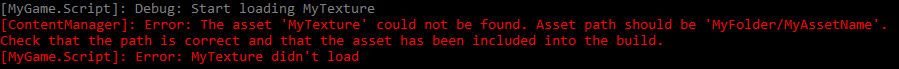
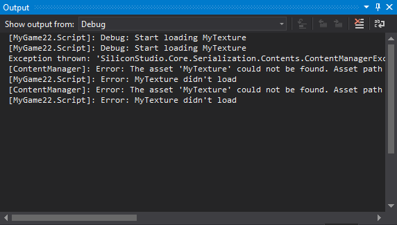

Ведение журнала
Продвинутый Программист
Вы можете вести журнал информации о вашей игре во время ее работы, используя Log.
В отличие от профилирования, который автоматически извлекает информацию, вы можете создавать собственные сообщения журнала и определять, когда они будут срабатывать. Например, вы можете создать сообщение журнала, которое срабатывает, когда персонаж выполняет определенное действие. Это полезно для исследования того, как работает ваша игра.
Note
Ведение журнала отключено при сборке игры в режиме релиза..
Когда вы используете ведение журнала и запускаете игру в режиме отладки, Stride открывает консоль во втором окне для отображения информации журнала. Сообщения имеют цветовую кодировку в зависимости от уровня. Имя модуля (например, скрипта, содержащего сообщение журнала) отображается в скобках. Далее следует уровень журнала (например, Предупреждение, Ошибка и т.д.), а затем сообщение журнала.

Консоль отображает сообщения журнала всех модулей, а не только ваши собственные скрипты. Например, она также отображает сообщения из ContentManager.
Если вы запускаете игру из Visual Studio, сообщения журнала отображаются в окне Output Visual Studio.

Уровни журнала
Существует шесть уровней сообщений журнала, используемых для разных уровней серьезности.
| Уровень журнала | Цвет | Описание |
|---|---|---|
| Debug | Серый | Пошаговая информация для расширенных целей отладки |
| Verbose | Белый | Подробная информация |
| Info | Зеленый | Общая информация |
| Warning | Желтый | Незначительные ошибки, которые могут вызвать проблемы |
| Error | Красный | Ошибки |
| Fatal | Красный | Серьезные ошибки, приводящие к сбою игры |
По умолчанию в журнале отображаются сообщения для уровня Info и выше. Это означает, что сообщения Debug или Verbose не отображаются. Чтобы изменить это, см. Set the minimum level below.
Вывод сообщения журнала
В скрипте, содержащем код, который вы хотите вывести, напишите:
Log.Debug("My log message");
Вы можете заменить Debug уровнем, который вы хотите использовать для сообщения журнала (см. выше Уровни журнала ).
Вы можете объединить это с оператором if для вывода сообщений при определенных условиях (см. ниже Пример сценария ).
Установка уровня журнала
Вы можете установить минимальный уровень журнала для отображения. Например, если вы хотите видеть только сообщения, которые являются серьезными, как Warning или выше, используйте:
Log.ActivateLog(LogMessageType.Warning);
Note
Это не глобальная настройка. Установленный вами уровень ведения журнала применяется только к тому скрипту, в котором вы его установили..
Изменение уровня журнала во время выполнения
((Game)Game).ConsoleLogLevel = LogMessageType.myLogLevel;
Отключение определенного журнала
GlobalLogger.GetLogger("RouterClient").ActivateLog(LogMessageType.Debug, LogMessageType.Fatal, false);
// Disables logging of the RouterClient module
Отключить ведение журнала в консоли
((Game)Game).ConsoleLogMode = ConsoleLogMode.None;
Создание файла журнала
Чтобы сохранить вывод журнала в текстовый файл, добавьте этот код в методStart :
var fileWriter = new TextWriterLogListener(new FileStream("myLogFile.txt", FileMode.Create));
GlobalLogger.GlobalMessageLogged += fileWriter;
Это создаст файл в папке Debug вашего проекта. (например MyGame\MyGame\Bin\Windows\Debug\myLogFile.txt).
Пример сценария
Следующий скрипт проверяет, что текстура MyTexture загружена. При загрузке текстуры в журнале отображается отладочное сообщение (Log.Debug). Если не загружается, в журнале регистрируется сообщение об ошибке. (Log.Error).
using System.Linq;
using System.Text;
using System.Threading.Tasks;
using Stride.Core.Diagnostics;
using Stride.Core.Mathematics;
using Stride.Input;
using Stride.Engine;
using Stride.Graphics;
namespace MyGame
{
public class Script : SyncScript
{
public Texture myTexture;
public override void Start()
{
// Initialization of the script.
Log.ActivateLog(LogMessageType.Debug);
Log.Debug("Start loading MyTexture");
myTexture = Content.Load<Texture>("MyTexture");
if (myTexture == null)
{
Log.Error("MyTexture not loaded");
}
else
{
Log.Debug("MyTexture loaded successfully");
}
}
}
}